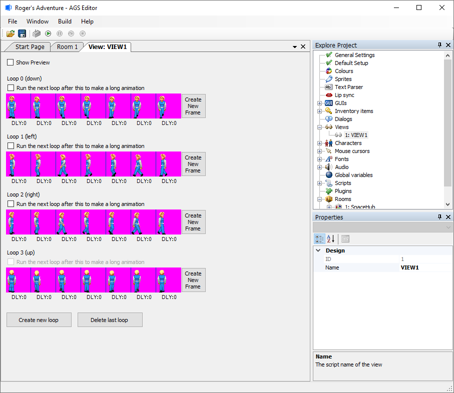
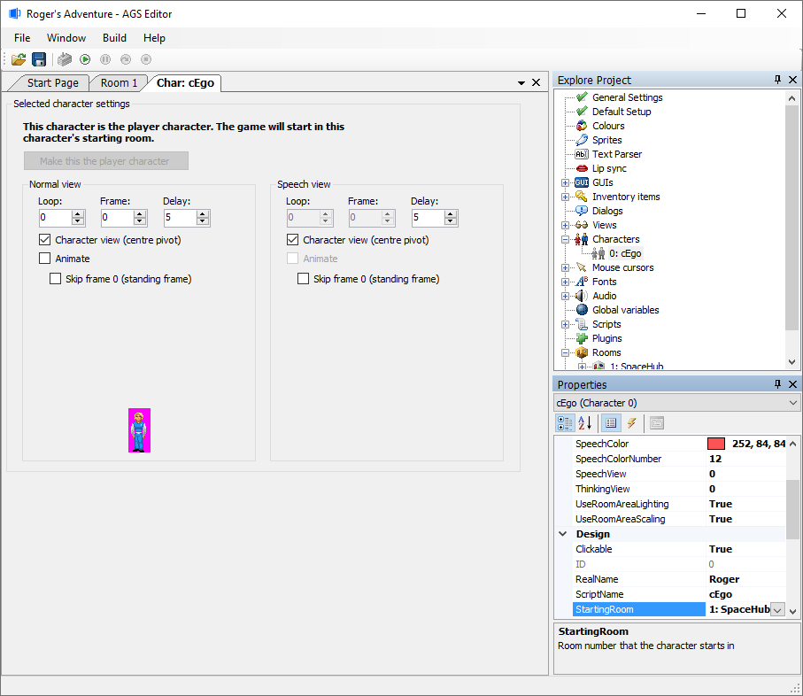
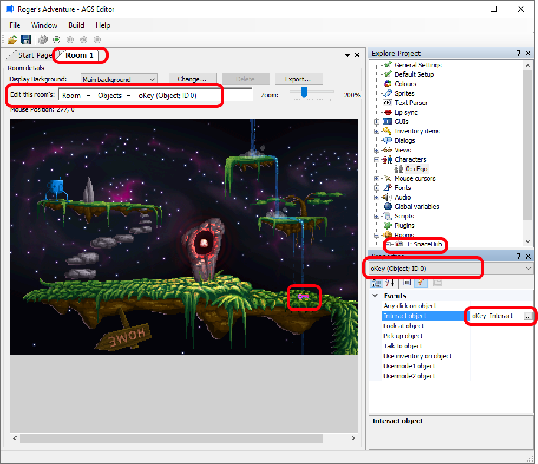
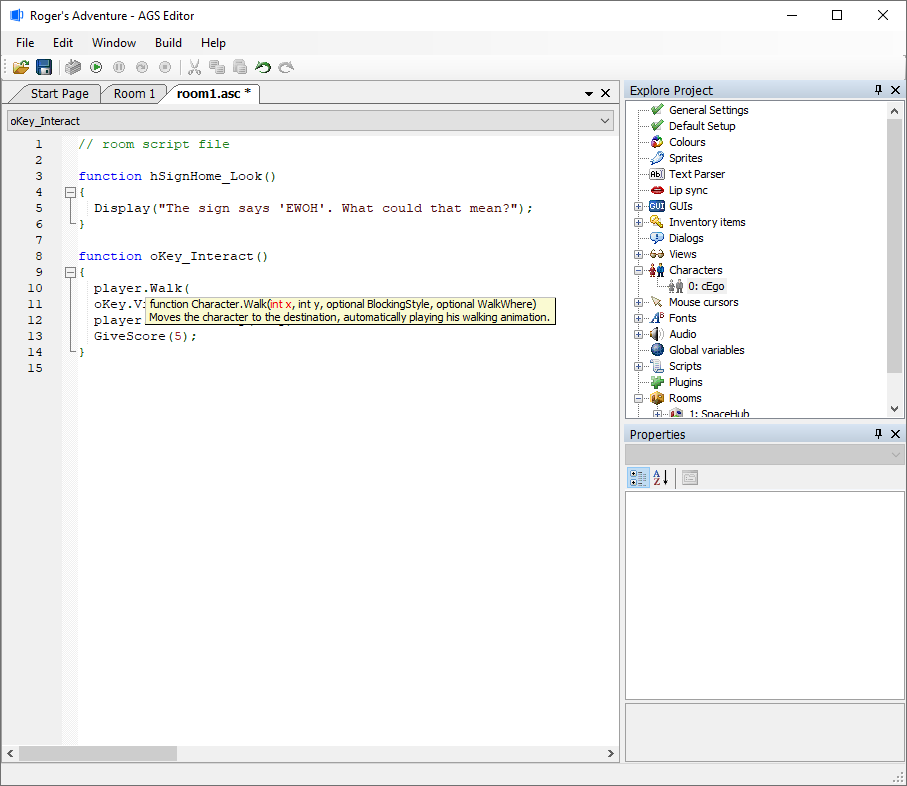
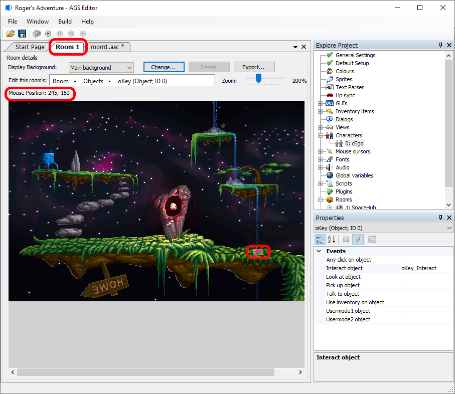
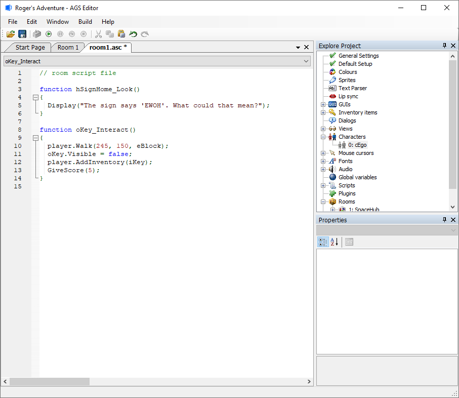

Getting Started with AGS - Part 7
Animations
A graphical adventure game would be no good without animations. These range from commonly-used animations such as the main character walking, to perhaps a flag waving as an object on one of your backgrounds.
Animations in AGS are managed using Views. A view is a set of one or more loops. A loop is a set of frames which, when played in sequence, give the illusion of movement.
Expand the "Views" node in the Project Tree, and double-click on "View 1":

This is the "View Editor" where you will put together all your animations. You'll notice lots of frames of Roger's walking animation in this window.
Each loop is displayed as a row of images (one for each frame), going from left to right. To change the image for a frame, double-click the image, and you'll be presented with the sprite manager where you can select the image to use.
NOTE: All images for use within views are imported as usual via the sprite manager before they can be inserted into a view-frame.
At the right-hand end of each loop, you'll see a "Create new frame" button, which you can click to create a new extra frame at the end of the loop. You can also right-click a current frame to insert a new one before or after it.
Left-click a frame to select it. When you do so, the Properties Grid will be updated with the frame's details:

- Appearance -> Delay is the frame's relative speed. This number adds a delay to the amount of time which the frame is displayed for, therefore a larger number makes it stay longer. You can use negative numbers to specifically shorten the frame's display time.
- Appearance -> Flipped toggles whether the frame is displayed normally or mirrored left-right. This feature allows you to just create animations for your character walking right, and then use the same images for the walking left loop and AGS will automatically flip them.
- "Design -> Sound" allows you to assign a sound number that will get played when this frame comes around in the animation. This feature is designed for footstep sounds, but has many other uses as well. Using sound in the AGS Editor is covered more in the Music and Sound tutorial.
Views aren't only used for character walking animations -- they're used for all types of animations in the game. How you actually run an animation in the game will be explained later on.
Characters
If you remember back to part 3 of this tutorial, we talked about three types of thing that the player can interact with - hotspots, objects and characters. We've covered the first two, so now it's time to take a look at characters.
Put simply, a character is similar to an object, except that it can move between different rooms in the game, take part in conversations, carry its own inventory, and more.
Expand the "Characters" node in the Project Tree. You'll see that so far you only have one character in the list, labeled "0: cEgo". You could create a new character by right-clicking that parent "Characters" node, but for now, double-click the "cEgo" character to bring up the Selected Character Settings window:

The first thing you may notice is the text "This character is the player character" at the top of the window. This shows that the currently selected character is the initial player character when the game starts up. To change it, simply open up the other character that you want to use as your playable starting character and click the "Make this the player character" button. The game will start off in whatever room number the Starts in room Properties value is set to for the player character.
There are quite a few properties available in the Properties Grid. Rather than explain them all here, we'll just cover the most important ones - you can find a full description of all the options in the manual.
- Appearance -> NormalView - sets which view is used for the normal walking animation of the character. The view specified here must have 4 or 8 loops, and the first frame of each loop is the "standing still" frame.
For a 4-loop character, when walking diagonally the closest straight direction is chosen for display. With an 8-loop character, all 8 directions are displayed depending on the character's direction.
Which loop represents which direction is shown in the Views editor (e.g. "Loop 0 (down)"). - Design -> Clickable - if this is not checked, then this character will be see-through to mouse clicks. This is similar to the way the player character worked in LucasArts games - you cannot actually click on Guybrush, it will always activate whatever is behind him.
- Design -> StartingRoom - this sets which room number the character starts off in at the beginning of the game.
- Design -> RealName - Simply gives you an easy way to identify the character in the editor, and can also be accessed from the game script if desired.
- Design -> ScriptName - This field is very important, as it sets the name by which the character will be referred to in the game scripts. The reason for having this as well as the RealName is that the script name can only contain the letters A-Z, whereas the RealName field can contain any spaces, numbers, etc.
Game starting point
Just in case you missed it, I'll repeat what was just said in the Characters section - the Starting Room setting of the player character is used to determine which room the game starts off in.
NOTE: This feature can be handy for testing various parts of your game. For example, when you're working on your 16th room, set the starting room to room 16 so that you can get to it instantly when you run the game to test it.
Cutscenes
A cutscene (coined by Ron Gilbert while developing Maniac Mansion) is simply the name given to a sequence of actions over which the player has no control. This usually applies to the entire introduction sequence, as well as far simpler in-game events. For example, if the player goes to pick up a rock from the ground, you may wish to use a bending-down animation to show him picking it up. During this bending down and standing back up, the player cannot control proceedings, so it is a cutscene.
Intro and Outro Cutscenes
You can easily add intro, outro and cutscene sequences to your game. There is no specific feature to do this - you simply use the provided animation and movement commands to do whatever you like.
You could make an "invisible" character (a see-through sprite) initially set as your player character and have them start in your Title Room background and opening cutscenes, and when you get to really start your game, you can set your real playable character as the player character at that time.
Simple Cutscene
Right, firstly let's do something very simple. When the player goes to pick up the key from the floor of our room, we want Roger to walk over to it first rather than it just disappearing from wherever Roger is standing.
So, we want to add something extra to picking up the key. How do we do this? Yes, that's right, we need to return to the Event Script for the key object. Go back to the Events List for the key object (remember, you open the room, select the "Objects" mode, then click on the key to select it):

The main difference you'll notice now is that the "Interact object" event already has a name. This "oKey_Interact" is the name of the script function that we created earlier. So, just select it and click the "..." button to return to the script editor.
Now, we want the player to walk across to the key before it disappears, so we need to add a new line of script before the existing command that makes the key invisible. We want to do an action on the player character (i.e. move him), so type player. and auto-complete will pop up with the available commands. See if you can work out which one we need.

Eeek! player.Walk() is correct, but the Editor wants a destination X and Y location! We don't know that, but we can find out! Click over to the "Room 1" tab on the tab bar at the top of the editor, and move the mouse cursor to where the key is on the background. Look just above the background image, and you should see "Mouse Position: 245, 150" or something similar. These are the X and Y co-ordinates, respectively, of the key's location. So, note them down, and click the "room1.asc" tab to return to the script.

Now, we can type in those co-ordinates to our script. We also need to pass in the "BlockingStyle" as eBlock, which tells the game to wait for Roger to get to those co-ordinates before continuing the script. If we didn't do this, he would start to walk but the key would disappear before he got there! The final script should look like this:

Testing Your Work
Now, hit F5 and try it out!
OK, I think we have had enough of animations and cutscenes for now. We'll return later to explore actual animations and more complex cutscenes.
Next Chapter: Part 8 - Conversations